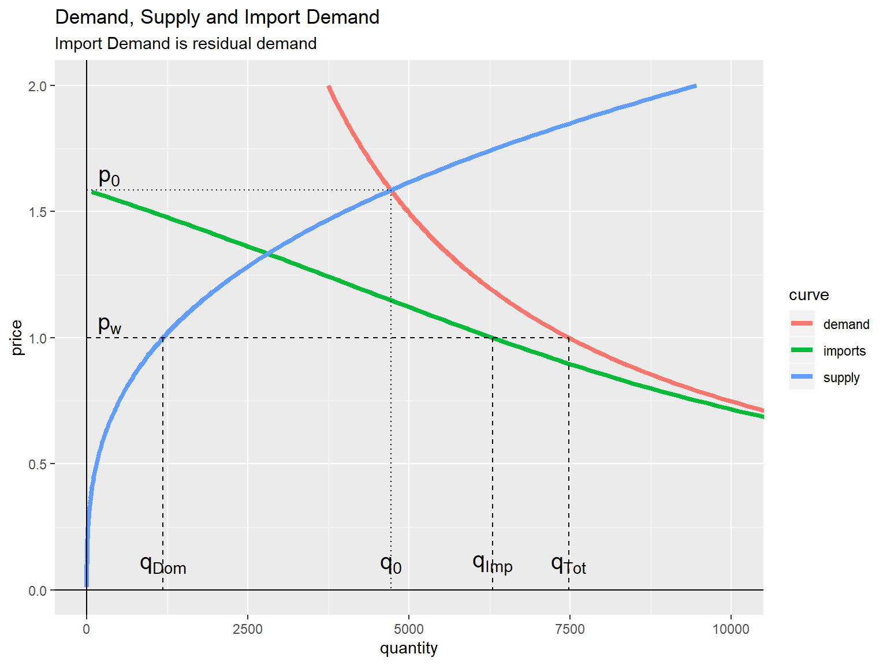
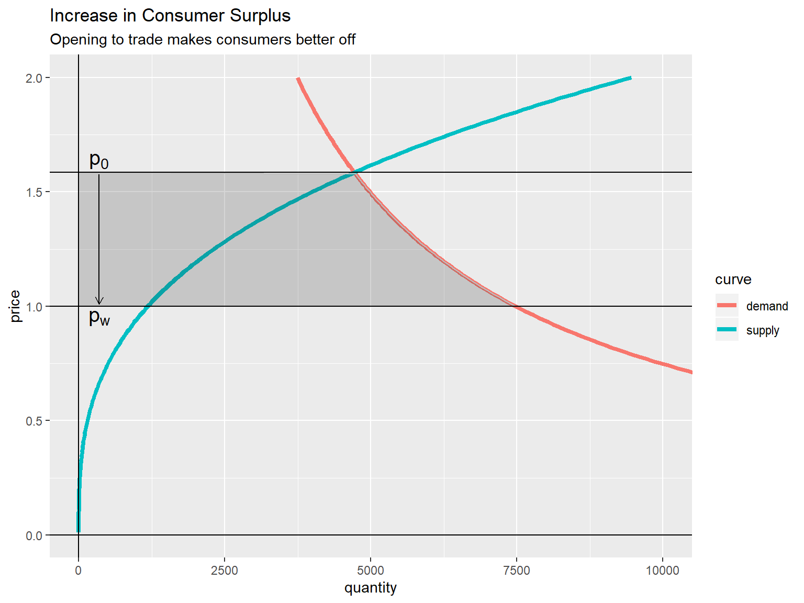
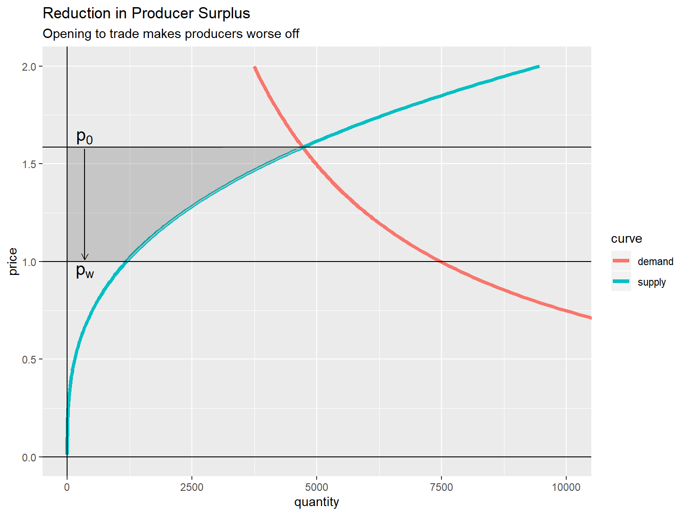
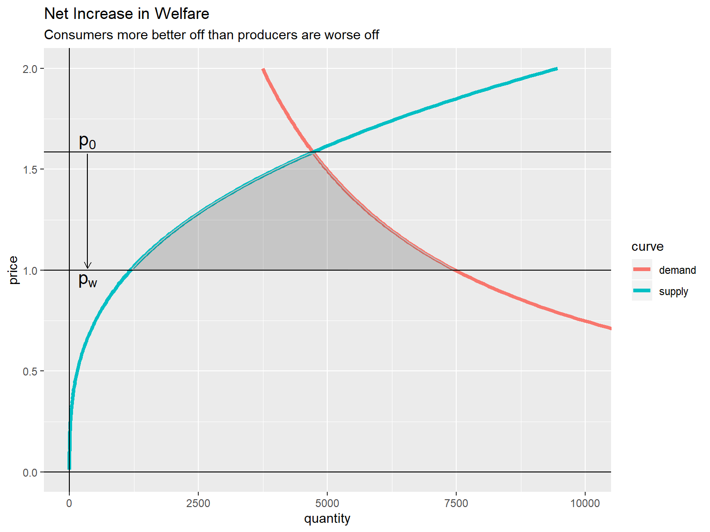
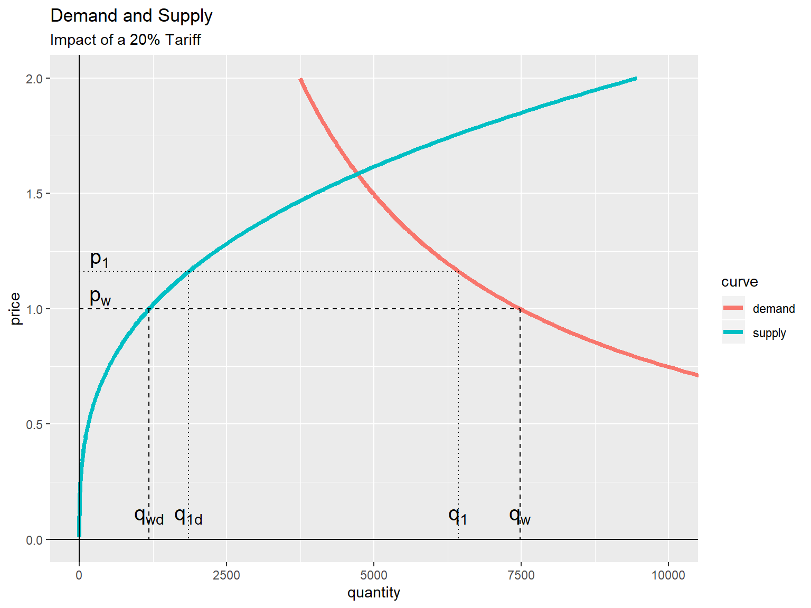
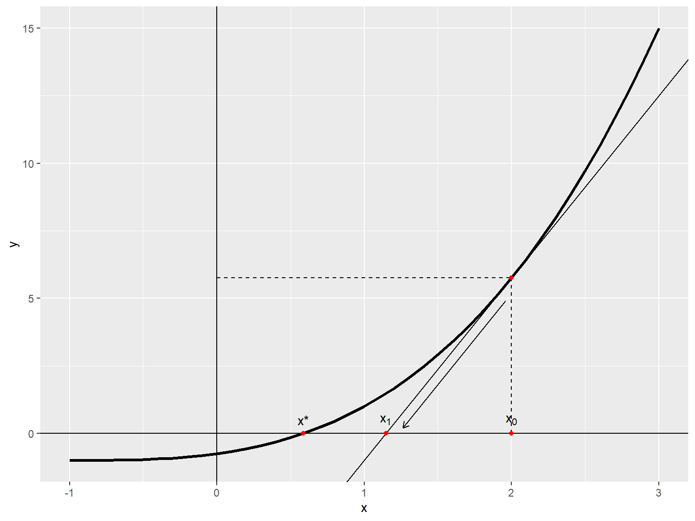
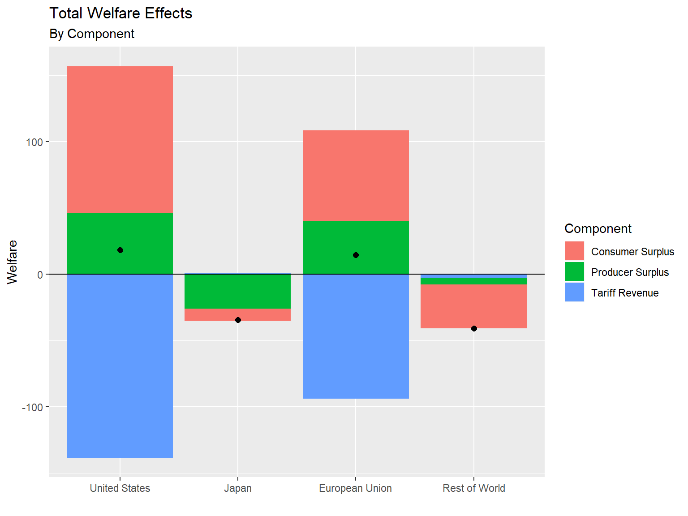
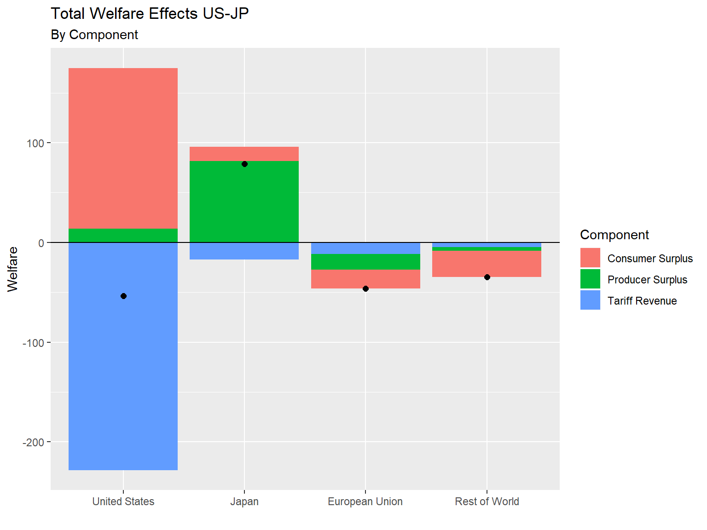
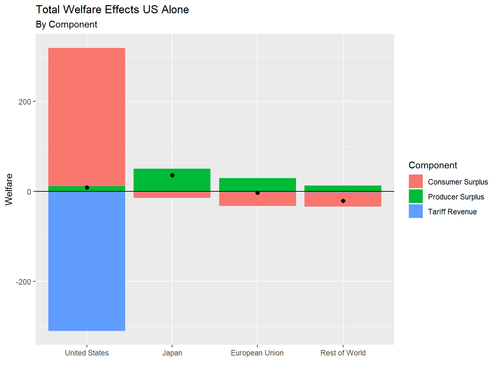

Partial Equilibrium models allow us to examine the effects of economic shocks in a parsimonious modelling environment with few data requirements or assumptions.
In this world, a specific market clears without regard to prices and quantity changes in other markets. In other words, all other prices, quantities and income are assumed to be fixed. Some of the advantages of this approach are obvious, including the ability to create and run models quickly, as well as producing intuitively appealing results.
When countries impose trade barriers, in this case in the form of tariffs, prices and quantities of implicated goods can be expected to respond.
We assume a large open economy with downward sloping import demand curves (this implies the country’s demand affects prices). In general, an importing country is assumed to have prices above the world price, since the alternative would imply no trade takes place. Buyers are assumed to be indifferent between domestic and foreign-produced substitutes.
Domestic Demand: \(Q_d=\alpha P^\eta\)
Domestic Supply: \(Q_s=\beta P^\epsilon\)
Import Demand (the excess of domestic demand over domestic supply): \(M_d=\alpha P^\eta-\beta P^\epsilon\)
Import Supply: \(M_s=\gamma P_w^\theta\)
Internal Price: \(P=(1+t) P_w\)
Without imports, domestic demand equals domestic supply.
\(Q_d = Q_s\) or \(\alpha P^\eta = \beta P^\epsilon\)
which implies \(\alpha / \beta = P^{\epsilon - \eta}\)
This can be solved for: \[P_0 = (\alpha / \beta) ^ \frac{1}{\epsilon - \eta}\] \[Q_0 = \alpha P_0^\eta = \alpha (\alpha / \beta) ^ \frac{\eta}{\epsilon - \eta} = \alpha ^ \frac{\epsilon}{\epsilon - \eta} \beta ^ \frac{-\eta}{\epsilon - \eta}\]
In this case, import demand equals import supply…
\(M_d = M_s\) or \(\alpha P^\eta - \beta P^\epsilon = \gamma P_w^\theta\)
but \(P = (1 + t) P_w\) which implies:
\(\alpha (1 + t)^\eta P_w^\eta - \beta (1 + t)^\epsilon P_w^\epsilon = \gamma P_w^\theta\)
Suppose:
\(\alpha =\) 7480.06, \(\beta =\) 1182.38, \(\gamma =\) 6297.68,
\(\eta =\) -1, \(\epsilon =\) 3 and \(\theta =\) 10
Ignoring tariffs for now…
This implies \(P_0 =\) 1.59 and \(Q_0 =\) 4716.48
Whereas in the benchmark case,
\(P^* = P_w = 1\) and \(Q^* = Q_{Domestic} + Q_{Imported}\)
= 1182.38 + 6297.68 = 7480.06

Using demand and supply curves defined above, price falls from \(P_0\) = 1.59 to \(P_w\) = 1
\(\Delta CS = -\int_{P_0}^{P_w} Q_d(u) du\)
but \(p_w\) < \(p_0\), so,
\(\Delta CS = -\int_{P_w}^{P_0} -Q_d(u) du = \alpha \int_{P_w}^{P_0} u^\eta du\)
if \(\eta \neq -1\), this equals \(\alpha \left[\frac{u^{\eta + 1}}{\eta + 1}\right]_{P_w}^{P_0}\)
if \(\eta = -1\), this equals \(\alpha \left[\ln u \right]_{P_w}^{P_0}\)
In this case, \(\Delta CS =\) 3449.64

\(\Delta PS = \int_{P_0}^{P_w} Q_s(u) du\)
but \(p_w\) < \(p_0\), so,
\(\Delta PS = -\int_{P_w}^{P_0} Q_s(u) du = -\beta \int_{P_w}^{P_0} u^\epsilon du\)
Since \(\epsilon > 0\), this equals \(-\beta \left[\frac{u^{\epsilon + 1}}{\epsilon + 1} \right]_{P_w}^{P_0}\)
In this case, \(\Delta PS =\) -1574.42

In this case we have \(\Delta CS + \Delta PS > 0\)
In fact, \(\Delta CS + \Delta PS =\) 1875.22

| Variables | Before | After | Change | Percent |
|---|---|---|---|---|
| Pw | 1.000 | 0.969 | -0.031 | -3.14 |
| P | 1.000 | 1.162 | 0.162 | 16.23 |
| Md | 6297.68 | 4578.51 | -1719.17 | -27.30 |
| Qs | 1182.38 | 1856.80 | 674.42 | 57.04 |
| Qd | 7480.06 | 6435.31 | -1044.75 | -13.97 |
| Tariffs | 0.00 | 886.97 | 886.97 | NA |
Welfare effect:
\(dW = -M dP_w + \frac{1}{2}(P - P_w) dM =\) 4.11
Terms of trade effect: \(-M dP_w =\) 170.64
Harberger triangle effect: \(\frac{1}{2}(P - P_w) dM =\) -166.52
Total differential above implies \(dW =\) 4.11
Comparing areas suggests:
\(\Delta CS = \alpha \left[ \ln u \right]_{P_w}^{P_1} =\) -1125.31
\(\Delta PS = \frac{\beta}{\epsilon + 1} \left[ u^{\epsilon + 1} \right]_{P_w}^{P_1} =\) 243.96
\(\Delta Tariffs = (P_w^1 - P_w) M =\) 886.97
\(\Delta W =\) 5.63

From above, equilibrium occurs at the root of \(f(P_w, t) = \alpha (1 + t)^\eta P_w^\eta - \beta (1 + t)^\epsilon P_w^\epsilon - \gamma P_w^\theta\)
We can observe that \(\frac{\partial f(P_w,t)}{\partial P_w} = \eta \alpha (1 + t)^\eta P_w^{\eta-1} - \epsilon \beta (1 + t)^\epsilon P_w^{\epsilon-1} - \theta \gamma P_w^{\theta-1}\) and \(\frac{\partial f(P_w,t)}{\partial t} = \eta \alpha (1 + t)^{\eta-1} P_w^\eta-1 - \epsilon \beta (1 + t)^{\epsilon-1} P_w^\epsilon\)
So, a linear approximation (a plane) is given by \(\hat{f}(P_w, t) = f(P_w^0,t^0) + \frac{\partial f(P_w^0,t^0)}{\partial P_w}(P_w - P_w^0) + \frac{\partial f(P_w^0,t^0)}{\partial t}(t - t^0)\)
\(\hat{f}(P_w,t)\) should be close to \(f(P_w, t)\) near \((P_w^0,t^0)\)
Is the solution of \(\hat{f}(P_w,t) = 0\) close to \(f(P_w, t) = 0\)?
\(\hat{f}(P_w,t) = 0\) implies that \(P_w = P_w^0 - \frac{f(P_w^0,t^0)}{\frac{\partial f}{\partial P_w}(P_w^0,t^0)} - \frac{\frac{\partial f}{\partial t}(P_w^0,t^0)}{\frac{\partial f}{\partial t}(P_w^0,t^0)}(t - t^0)\)
The solution to the non-linear equation gives \(P_w^1 =\) 0.9686.
The approximation yields 1-step value of \(P_w^{1s} =\) 0.9702 and a 4-step value of \(P_w^{4s} =\) 0.9688.
The 1-step estimate is off by 0.16% and the 4-step by 0.02%
Let’s try a 100% tariff in the simple model…
The non-linear solution gives the new world price \(P_{trump} =\) 0.7726.
The resulting domestic price is $1.55 which is just below the $1.59 price with no trade.
The approximation yields 1-step value of \(P_{trump}^{1s} =\) 0.8510 and a 4-step value of \(P_{trump}^{4s} =\) 0.7788.
The 1-step is off by 10.14% and the 4-step by 0.79%
So, perhaps be cautious when using linear approximations… or, take small steps…
GSIM is a widely used modelling strategy for the partial equilibrium analysis of global trade policy changes developed by Joseph Francois and H. Keith Hall.
GSIM is a static, deterministic, single commodity bilateral trade model driven by export supply and bilateral import demand equations. Imports and exports are assumed to be a function of the world price after taking into account relevant bilateral trade taxes or subsidies. Since tariffs are bilateral and differ from country to country, changes in tariffs lead to changes in relative prices that drive differential changes in imports from various sources. Elasticities of substitution (Armington elasticities) determine the extent to which changes in relative prices lead to switches in the source of imports.
The model solves numerically to find market clearing prices such that global imports equate to global exports.
Francois and Hall provide 4x4 and 25x25 Excel based calculators with linearized versions of the model. We have ported a generalized version of those models to the R software environment for statistical computing and graphics.
Because the partial equilibrium approach ignores other products that may be substitutes in consumption or production, losses and gains are potentially overestimated, as transfers of resources to or from other sectors are ignored. However, the approach has the useful advantage of allowing for a relatively rapid and transparent analysis of a wide range of trade policy issues with a minimum of data and computational requirements.
GSIM is ideal for preliminary work especially when data availability is limited.
In September 2018, the U.S. Department of Agriculture used GSIM to estimate the level of gross trade damage caused by retaliatory tariffs to U.S. agricultural exports by commodity.
In the model, Chinese import demand for product i coming from the U.S. falls as the result of a retaliatory tariff. The level imported comes from the following equation:
\(M_{i,(US,CN)}^\tau = \left[ \frac{ \alpha_{i,(US,CN)} }{ P_{i,(US)}^*(1+\tau_{i,(US,CN)})} \right]^\sigma P_{i,(CN)}^{\sigma - 1} E_{i,(CN)}\)
Choose export prices for each region so that global demand equals global supply.
\[ F(\mathbf P) = F \left( \begin{matrix} P_{US}\\ P_{JP}\\ P_{EU}\\ P_{RW} \end{matrix} \right) = \left( \begin{matrix} F_{US}\\ F_{JP}\\ F_{EU}\\ F_{RW} \end{matrix} \right) \left( \begin{matrix} P_{US}\\ P_{JP}\\ P_{EU}\\ P_{RW} \end{matrix} \right) = \left( \begin{matrix} 0\\ 0\\ 0\\ 0\\ \end{matrix} \right) \]
We can use a multi-dimensional version of Newton’s Method to improve a price vector…

\[J( \mathbf{P}) = \left. \left[ \begin{matrix} \frac{\partial F_{US}}{\partial P_{US}} && \frac{\partial F_{US}}{\partial P_{JP}} && \cdots && \frac{\partial F_{US}}{\partial P_{RW}}\\ \frac{\partial F_{JP}}{\partial P_{US}} && \frac{\partial F_{JP}}{\partial P_{JP}} && \cdots && \frac{\partial F_{JP}}{\partial P_{RW}}\\ \frac{\partial F_{EU}}{\partial P_{US}} && \frac{\partial F_{EU}}{\partial P_{JP}} && \cdots && \frac{\partial F_{EU}}{\partial P_{RW}}\\ \frac{\partial F_{RW}}{\partial P_{US}} && \frac{\partial F_{RW}}{\partial P_{JP}} && \cdots && \frac{\partial F_{RW}}{\partial P_{RW}}\\ \end{matrix} \right] \; \right\rvert_{\mathbf{P}=P_0} \]
with
\[J_{ij} = \partial F_i / \partial P_j \approx \begin{cases} (F(\cdots,P_j + h,\cdots) - F(P))/h\text{, difference quotient, or}\\ F(\cdots,P_j + h,\cdots) - F(P)\text{, finite difference} \\ \end{cases}\]
A first order approximation to F around \(P_0\) is given by
\(F(\mathbf{P}) = F(\mathbf{P_0}) + J(\mathbf{P_0}) \mathbf{dP}\)
As in the simple model above, we can solve for the price change that makes \(F(\mathbf{P}) = \mathbf{0}\) as follows
\(\mathbf{dP} = -J^{-1}(\mathbf{P_0}) F(\mathbf{P_0})\)
So, take a step along \(\mathbf{dP}\) and evaluate again…
| US | JP | EU | RW | |
|---|---|---|---|---|
| US | 0 | 50 | 200 | 300 |
| JP | 500 | 0 | 150 | 200 |
| EU | 300 | 100 | 200 | 200 |
| RW | 50 | 100 | 110 | 20 |
and
| US | JP | EU | RW | |
|---|---|---|---|---|
| US | 1.00 | 1.21 | 1.41 | 1.22 |
| JP | 1.37 | 1.00 | 1.31 | 1.23 |
| EU | 1.32 | 1.36 | 1.00 | 1.18 |
| RW | 1.57 | 1.41 | 1.25 | 1.15 |
| US | JP | EU | RW | |
|---|---|---|---|---|
| US | 1.00 | 1.21 | 1.00 | 1.22 |
| JP | 1.37 | 1.00 | 1.31 | 1.23 |
| EU | 1.00 | 1.36 | 1.00 | 1.18 |
| RW | 1.57 | 1.41 | 1.25 | 1.15 |
P = ( 0.0792, -0.0316, 0.0480, -0.0184)T
| US | JP | EU | RW | |
|---|---|---|---|---|
| US | 0.00000 | -12.16680 | 185.86573 | -59.652142 |
| JP | -95.96956 | 0.00000 | -21.02917 | 51.079077 |
| EU | 218.22377 | -10.20246 | -97.38968 | -11.762546 |
| RW | -12.29562 | 16.70691 | -21.28058 | 4.150849 |
| Region | ProducerSurplus | ConsumerSurplus | TariffRevenue | NetWelfare |
|---|---|---|---|---|
| United States | 46.1 | 110.6 | -138.5 | 18.2 |
| Japan | -26.2 | -8.9 | 0.6 | -34.5 |
| European Union | 39.8 | 68.6 | -93.8 | 14.5 |
| Rest of World | -5.1 | -32.9 | -2.9 | -40.8 |

| US | JP | EU | RW | |
|---|---|---|---|---|
| US | 1.00 | 1.00 | 1.41 | 1.22 |
| JP | 1.00 | 1.00 | 1.31 | 1.23 |
| EU | 1.32 | 1.36 | 1.00 | 1.18 |
| RW | 1.57 | 1.41 | 1.25 | 1.15 |
P = ( 0.0241, 0.0897, -0.0201, -0.0138)T
| US | JP | EU | RW | |
|---|---|---|---|---|
| US | 0.00000 | 31.661720 | -2.43623 | 4.379462 |
| JP | 302.53348 | 0.000000 | -45.97850 | -55.605497 |
| EU | -102.51001 | -7.095785 | 32.35968 | 37.484310 |
| RW | -18.43224 | -9.615467 | 15.19147 | 3.277858 |
| Region | ProducerSurplus | ConsumerSurplus | TariffRevenue | NetWelfare |
|---|---|---|---|---|
| United States | 13.5 | 161.2 | -228.3 | -53.6 |
| Japan | 81.4 | 14.3 | -17.0 | 78.7 |
| European Union | -15.9 | -18.8 | -11.5 | -46.1 |
| Rest of World | -3.8 | -26.3 | -4.6 | -34.7 |

| US | JP | EU | RW | |
|---|---|---|---|---|
| US | 1 | 1.21 | 1.41 | 1.22 |
| JP | 1 | 1.00 | 1.31 | 1.23 |
| EU | 1 | 1.36 | 1.00 | 1.18 |
| RW | 1 | 1.41 | 1.25 | 1.15 |
P = (0.0211, 0.0569, 0.0360, 0.0450)T
| US | JP | EU | RW | |
|---|---|---|---|---|
| US | 0.00000 | 2.7753352 | 11.335004 | 15.253006 |
| JP | 159.76192 | 0.0000000 | -14.341580 | -20.329371 |
| EU | 77.53645 | -0.6433381 | -1.049595 | -2.232991 |
| RW | 42.63517 | -4.4805095 | -4.797034 | -0.991555 |
| Region | ProducerSurplus | ConsumerSurplus | TariffRevenue | NetWelfare |
|---|---|---|---|---|
| United States | 11.8 | 306.7 | -309.5 | 9.0 |
| Japan | 50.4 | -12.8 | -1.5 | 36.1 |
| European Union | 29.6 | -31.2 | -1.0 | -2.6 |
| Rest of World | 13.0 | -32.0 | -1.9 | -20.8 |

Could easily be extended to model 11x11 provinces (including 10 provinces and Rest of World) to look at provincial trade flows.
Some related work being done internally, and some outside work (Stats Can Hexagon Paper comes to mind) where gravity models suggest that trade flows could potentially be quite a bit higher and are impeded by barriers.
What would we find if we relaxed some trade barriers?